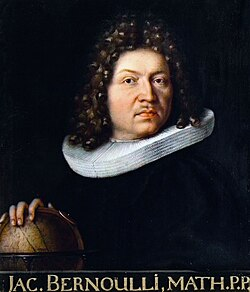

1654-1705
Jakob Bernoulli

Portrait: Niklaus Bernoulli (1662-1716), Public domain, Wikimedia Commons.
Events (5)
- 1657Probability from games of chance
originator · Probability
- 1663Cardano: first treatise on chance (Liber de ludo aleae)
systematiser · Probability
- 1694Elliptic integrals from lemniscate and elastica (Bernoulli)
originator · Analysis
- 1696Calculus of variations from the brachistochrone
developer · Optimization & control
- 1713Bernoulli's Ars Conjectandi and the law of large numbers
developer · Probability